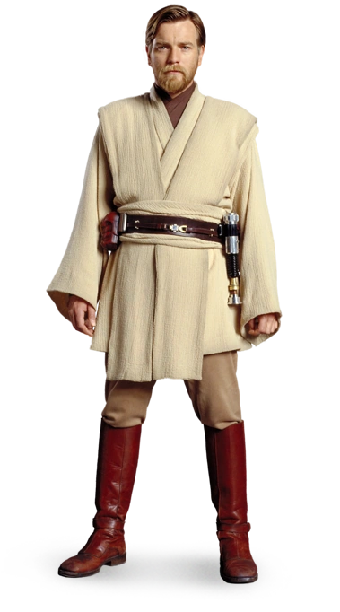

Obi-wan Kenobi

Obi-wan Kenobi er en av de orginale karakterene som vi først møtte tilbake i 1977 når de første filemene kom ut.
Da ble han spilt av en som het Alec Guniess, I de nyere filmene og seriene blir han spilt av Ewan Mcgregor.
Obi-wan var Mastern (læreren) til Anakin Skywalker før han ble Darth Vader.